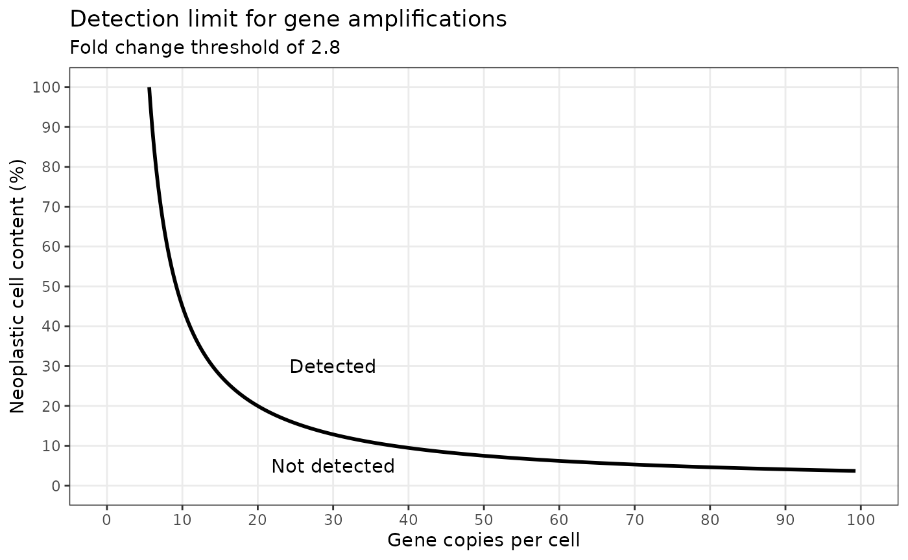

Detection thresholds
detection_thresholds.RmdAnalytical pipelines require detection thresholds for gene dosage. The application of thresholds allows the pipeline to classify a gene region as a particular dosage state, such as “normal”, “gain” or “loss”.
However, determining the sensitivity of a threshold can be challenging. This is because the accuracy of the threshold will depend on the sample’s neoplastic cell content (NCC) and the number of gene copies per cell; both of these values vary between samples.
Amplifications
In cancer, oncogenes can be amplified to copy numbers rangeing from
tens to hundreds of copies above the standard 2 copies per cell. Using
the pred_cpc function, we can predict the gene copies per
tumour cell which would be detected at different neoplastic cell
contents when a fold change threshold of 2.8 is applied.
df_amp <- data.frame(ncc = seq(0, 100, by = 0.1)) |>
mutate(gene_copies = pred_cpc(fc = 2.8,
ncc = ncc,
dir = "gain",
digits = 3))We can then use ggplot to show the results.

Deletions
For gene deletions, the number of gene copies per tumour cell is more limited. Assuming that the cell is diploid, the cell can have a normal gene copy number of 2, or a copy number of 1 if the gene has been heterozygously deleted, or a copy number of 0 if the gene has been homozygously deleted.
By using the pred_fc function, we can predict the fold
changes for each deletion state at different neoplastic cell
contents.
df_del <- data.frame(ncc = seq(0, 100, by = 0.1)) |>
mutate(fold_change_normal = pred_fc(tumour_cpc = 2,
ncc = ncc,
dir = "loss",
digits = 3),
fold_change_het_del = pred_fc(tumour_cpc = 1,
ncc = ncc,
dir = "loss",
digits = 3),
fold_change_hom_del = pred_fc(tumour_cpc = 0,
ncc = ncc,
dir = "loss",
digits = 3)) |>
pivot_longer(cols = -ncc,
names_to = "del_state",
values_to = "fold_change")By plotting the results, we can see that determination of the neoplastic cell content is critical for differentiating between homozygous and heterozygous deletions when the fold change is greater than -2.